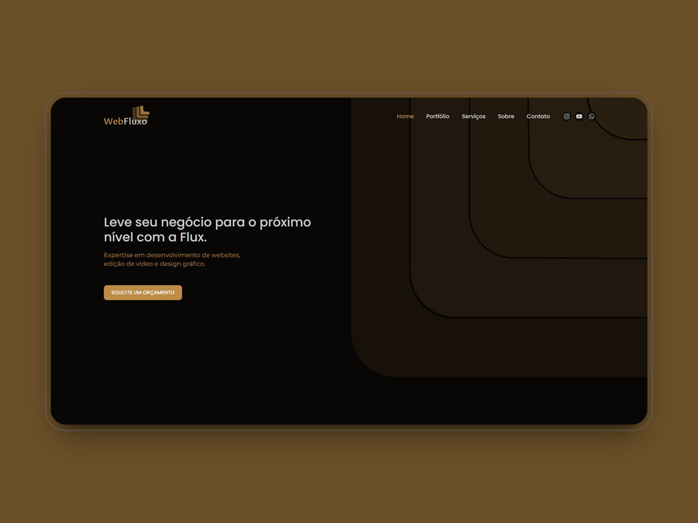

Ol√°! Meu nome √© Pablo üëã
Sou um Desenvolvedor Front-end de 23 anos com paixão por programação e um forte desejo de continuar aprendendo.
Cada desafio é uma oportunidade de crescimento para mim, e estou sempre buscando melhorar minhas habilidades técnicas e interpessoais.
Acredito que a colaboração é essencial para o sucesso.
Tecnologias
Tecnologias que uso em meus projetos, e que tenho conhecimento.
 HTML
HTML
 CSS
CSS
 JavaScript
JavaScript
 TypeScript
TypeScript
 React
React
 NodeJs
NodeJs
 Figma
Figma
Projetos
Projetos que eu estou desenvolvendo atualmente, ver mais projetos.

WebFlux
Soluções modernas em WordPress para destacar sua marca online com design exclusivo e performance otimizada.